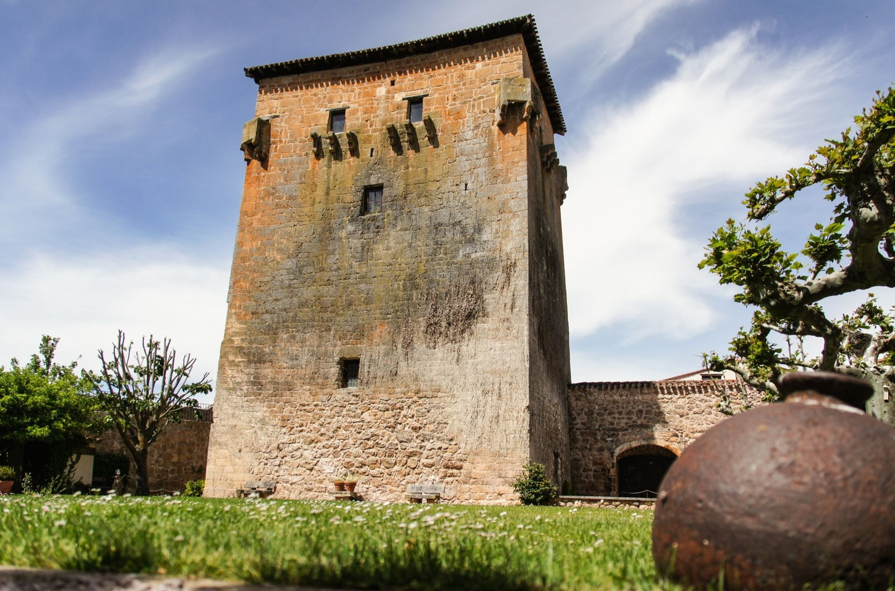

Situada en la provincia de Burgos, en la comunidad de Castilla y León, Covarrubias es una de las villas con mayor riqueza histórica y patrimonial de España. Conocida como "la cuna de Castilla", su historia se remonta a tiempos antiguos, con un papel protagonista en el surgimiento y consolidación del Reino de Castilla durante la Edad Media.
Orígenes antiguos
Aunque la primera documentación sólida de Covarrubias aparece en la Edad Media, se han hallado vestigios que indican presencia humana desde tiempos prerromanos y romanos. Su situación privilegiada, en un fértil valle a orillas del río Arlanza, la convirtió en un lugar estratégico y de paso para diferentes pueblos a lo largo de la historia.
Fundación del Infantado (siglo X)
La historia medieval de Covarrubias da un salto trascendental en el año 978, cuando el conde García Fernández de Castilla funda el Infantado de Covarrubias, una institución de carácter eclesiástico-administrativo que otorgó a la villa una gran autonomía y relevancia política. Este infantado fue creado para su hija, la infanta Urraca, que se convirtió en abadesa y señora de un extenso territorio.
Este hecho convirtió a Covarrubias en uno de los núcleos más importantes del primitivo Condado de Castilla, junto con Burgos y Oña. El poder de las mujeres en este contexto fue excepcional para la época, y marca un capítulo único en la historia castellana.
Una princesa vikinga en Castilla
En el siglo XIII, Covarrubias vivió uno de los episodios más singulares de su historia: la llegada de Kristina de Noruega, hija del rey Haakon IV. Viajó hasta España para casarse con el infante Felipe de Castilla, hermano del rey Alfonso X el Sabio. Aunque vivió pocos años tras el matrimonio, su historia dejó una profunda huella, y hoy sus restos descansan en la Colegiata de San Cosme y San Damián. Esta conexión nórdico-castellana es una de las más curiosas del medievo europeo.
Edad Moderna y conservación del patrimonio
Durante los siglos XVI y XVII, Covarrubias continuó siendo una villa notable, con una economía basada en la agricultura, el comercio local y la actividad eclesiástica. Sus nobles construyeron palacetes, y muchas casas conservan aún el característico entramado de madera que le da su estética tan reconocible.
En esta época se consolidan varios de los monumentos que hoy son emblemas del municipio, como la Casa de Doña Sancha, el Torreón de Fernán González y diversas ermitas repartidas por el entorno rural.
Siglo XIX y XX: decadencia y resurgir
Covarrubias, como muchas otras villas españolas, sufrió durante el siglo XIX las consecuencias de la desamortización de bienes eclesiásticos, lo que provocó el abandono de propiedades y cierta decadencia económica. Sin embargo, su valioso patrimonio arquitectónico y su relevancia histórica permitieron conservar sus edificios más representativos.
Durante el siglo XX, Covarrubias fue redescubierta como tesoro cultural y turístico, comenzando una labor de recuperación que sigue hasta hoy.
Covarrubias hoy
En la actualidad, Covarrubias forma parte de la red de “Los Pueblos Más Bonitos de España”. Su combinación de historia, belleza y autenticidad la convierten en un destino único para quienes desean adentrarse en el alma de Castilla.
Visitar Covarrubias es pasear por siglos de historia, por calles que han visto pasar condes, princesas, monjes y viajeros. Es vivir el pasado con los ojos del presente.
¿Que hacer en Covarrubias?
En Covarrubias disponemos de una cuna cultural magnífica, una arquitectura inigualable, un paisaje digno de película y un ambiente admirable. A continuación algunas de las actividades que se pueden realizar en nuestro pueblo:
Visitar el Torreón de Fernán Gonzalez
En el fabuloso y único testimonio de la época condal constituido por el Torreón de Fernán González de Covarrubias, del siglo X, se localiza una trágica leyenda en torno a una infanta castellana llamada Doña Urraca. Sus muros albergan una magnífica exposición de armas de asedio de época medieval, a las cuales supo resistir esta fenomenal construcción defensiva.

Visitar la Colegiata de San Cosme y San Damián
Antigua colegiata. La actual iglesia, de 1474, es de tres naves y acoge un panteón de ilustres familias en el claustro, del XVI. Existe un sepulcro del XII de la Infanta Cristina de Noruega, primera esposa del Infante Felipe, hijo de Fernando III.
Su iglesia gótica, de las mejores de la escuela burgalesa, guarda obras de arte de pinturas de Alonso de Sedano, Diego de la Cruz y Pedro Berruguete; esculturas de los Egas y Juan de Vallejo; joyas de Gonzalo de Calahorra. Destaca el claustro del siglo XVI y un órgano del siglo XVII, así como altares barrocos del siglo XVIII.
Disfrutar del agua del Piélago
En un día de calor puedes sofocarlo dántote un baño en el río en la zona del Piélago, donde además, se dispone de un bar donde puedes tomarte algo y pasar el día con los amigos o con la familia.
El pueblo
Disfruta del pueblo, observa su curiosa arquitectura, da una vuelta, tomate algo, visita iglesias, observa el casco antiguo, ¡un sin fin de actividades que se pueden realizar por tu cuenta!
¿Dónde estamos?
Nos situamos a al sudeste de la capital burgalesa, a unos 40 kilómetros (C.P. 09346). En coche se tarda 35 minutos por N-234 y BU-901; mientras que por A-1 y BU-904 se tarda unos 45 minutos.